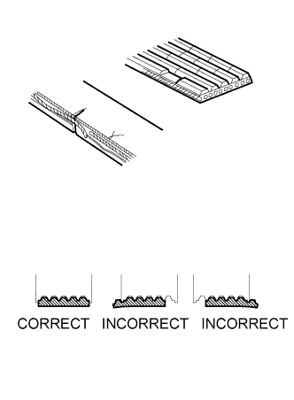
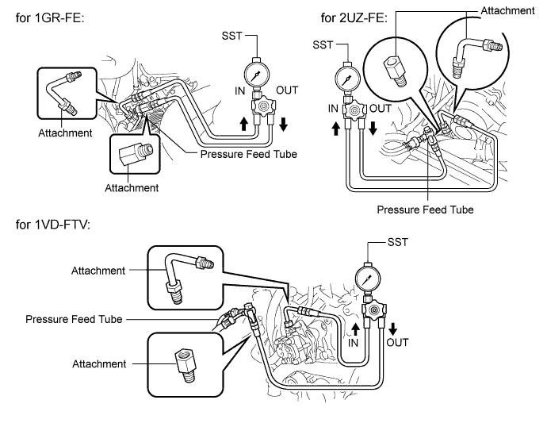
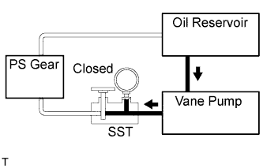
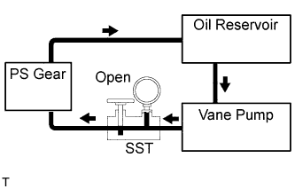
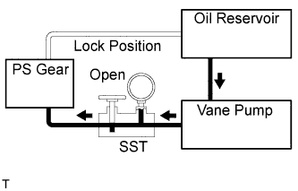

POWER STEERING SYSTEM > ON-VEHICLE INSPECTION |
| 1. INSPECT DRIVE BELT |
 |
Visually check the belt for excessive wear, frayed cords, etc.
If any defect is found, replace the drive belt.
Check by hand that the belt fits properly in the ribbed grooves and has not slipped out of the grooves on the bottom of the crank pulley.
| 2. BLEED POWER STEERING SYSTEM |
Check the fluid level.
Jack up the front of the vehicle and support it with stands.
Turn the steering wheel.
With the engine stopped, turn the wheel slowly from lock to lock several times.
Lower the vehicle.
Start the engine.
Idle the engine for a few minutes.
Turn the steering wheel.
With the engine idling, turn the wheel left or right to the full lock position and keep it there for 2 to 3 seconds, then turn the wheel to the opposite full lock position and keep it there for 2 to 3 seconds. *1
Repeat *1 several times.
Stop the engine.
 |
Check for foaming or emulsification.
If the system has to be bled twice because of foaming or emulsification, check for fluid leaks in the system.
Check the fluid level.
| 3. CHECK FLUID LEVEL |
 |
Keep the vehicle horizontal.
With the engine stopped, check the fluid level in the reservoir.
If necessary, add fluid.
Start the engine and idle it.
Turn the steering wheel from lock to lock several times to raise the fluid temperature.
|
Check for foaming or emulsification.
If foaming or emulsification is identified, bleed the power steering system.
 |
With the engine idling, measure the fluid level in the reservoir.
Stop the engine.
Wait a few minutes and remeasure the fluid level in the reservoir.
Check the fluid level.
| 4. CHECK STEERING FLUID PRESSURE |
for 2UZ-FE:
Remove the air cleaner with the air cleaner hose (Click here).
Disconnect the pressure feed tube from the vane pump.
for 1GR-FE:
Refer to the following procedures (Click here).
for 2UZ-FE:
Refer to the following procedures (Click here).
for 1VD-FTV:
Refer to the following procedures (Click here).
Connect SST as shown in the illustration.

Bleed the power steering system.
Start the engine and idle it.
Turn the steering wheel from lock to lock several times to raise the fluid temperature.
 |
With the engine idling, close the valve of SST and observe the reading on SST.
 |
With the engine idling, fully open the valve.
Measure the fluid pressure at engine speeds of 1000 rpm and 3000 rpm.
 |
With the engine idling and the valve fully open, turn the steering wheel left or right to the full lock position. Observe the reading on SST.
Disconnect SST.
Connect the pressure feed tube to the vane pump.
for 1GR-FE:
Refer to the following procedures (Click here).
for 2UZ-FE:
Refer to the following procedures (Click here).
for 1VD-FTV:
Refer to the following procedures (Click here).
for 2UZ-FE:
Install the air cleaner with the air cleaner hose (Click here).
Bleed the power steering system.